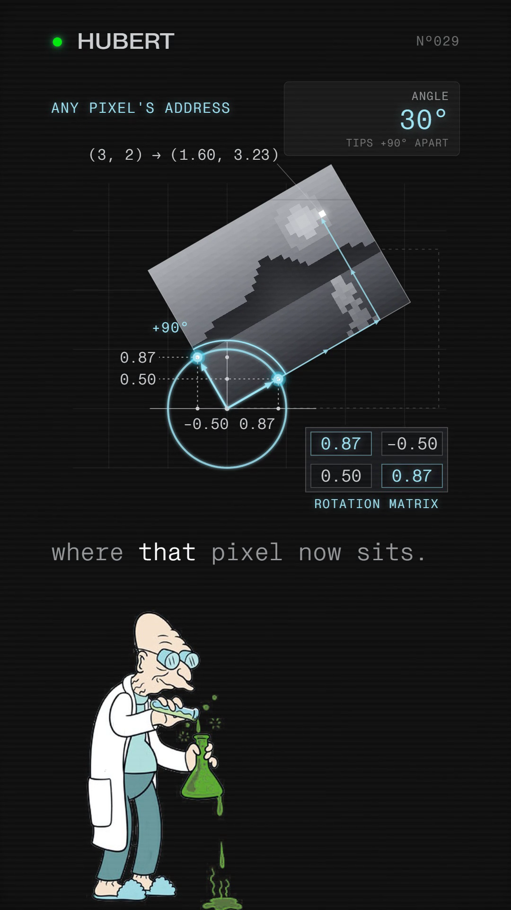

You commented TURN — this is the four-number card.
Rotating your photo is four numbers. Two are the same.
Lay the photo on a grid and draw two arrows of length one from one corner, one along the bottom edge and one up the side. Every pixel is an address written in those two arrows, so turning the arrows turns every pixel with them. Put a circle of radius one around that corner and turn the photo: each arrow's tip slides along the circle, and its two coordinates are two of the four numbers. The second arrow started a quarter turn ahead of the first and stays there, so its tip is the first tip moved ninety degrees round the same circle — which is why one number in the grid shows up twice. Because both tips never leave the circle, the arrows keep their length and their right angle at every angle, so the photo turns and nothing in it stretches.
Companion to the reel · Watch it on @huberttheinventor

| Top row | cos θ | −sin θ |
| Bottom row | sin θ | cos θ |
Each column is where one axis arrow lands: the first column is the bottom-edge arrow's tip after the turn, the second column is the side arrow's tip.
| Top row | 0.87 | −0.50 |
| Bottom row | 0.50 | 0.87 |
The two 0.87 slots are the same number, not a coincidence: cos(θ + 90°) = −sin θ and sin(θ + 90°) = cos θ (Wikipedia, “List of trigonometric identities,” shifts and periodicity), so the second arrow's tip, a quarter turn ahead, always reuses the first tip's own two numbers, swapped and one negated.
Nº001 · The address
Every pixel is a recipe in two arrows
Pick a pixel three steps along the first arrow and two steps up the second: address (3, 2). It never needs its own angle, because it is only ever a recipe written in the two arrows — three of the first, plus two of the second. Turn the arrows, and the same recipe, re-laid along the turned arrows, lands the pixel in its new spot. Feed the address into the matrix and the turned position falls out directly:
| Before | 3 | 2 |
| After | 1.60 | 3.23 |
That is the whole reason every pixel follows when the photo turns: none of them are tracked one by one, they are all the same two arrows, read at a different address.
Nº002 · The circle
Sine and cosine are just where a tip lands
Put a circle of radius one around the corner the two arrows share. Turn the photo 30° and the first arrow's tip slides along that circle to a point 0.87 across and 0.50 up — and that is all cosine and sine are: the across and up coordinates of a point on a circle of radius one (Wikipedia, “Unit circle”). At 90° the same tip sits straight up, and both tips' readings tick round the full matrix to 0, −1, 1, 0.
| Top row | 0 | −1 |
| Bottom row | 1 | 0 |
Nº003 · Why it doesn't stretch
Both tips stay on the circle, at every angle
A rotation matrix is orthogonal, which is the source's word for a plainer fact: it leaves every length and every angle inside the picture exactly as it found them (Wikipedia, “Rotation matrix”). The two arrows started at length one with a right angle between them; because their tips never leave the circle of radius one as the angle sweeps, they keep that length and that right angle at every angle in between. Every pixel is still an address in the same two unchanged arrows, so the photo turns and nothing in it bends or stretches.
Nº004 · The honest scope
What this card does and doesn't claim
The four numbers are the turn itself. Image libraries carry two more
numbers beside them for where the centre of the picture sits, and they run the recipe backwards: each
output pixel asks which input pixel it came from, so that every output pixel gets a colour. Pillow's
Image.rotate() builds a matrix of cos θ, sin θ,
0.0, −sin θ, cos θ, 0.0 and calls it
as the reverse transform, the two 0.0 slots filled with the centre offset; OpenCV's
getRotationMatrix2D builds the same four numbers into a 2×3 form with a centre column
added. Nothing here is said about area or the determinant — a different guide's job
— and cosine is read only as a tip's coordinate, never as a shadow cast by anything. Whether a
phone gallery app rotates pixels at all, or only writes an orientation flag, is unverified and
this page claims neither.
“These transformed vectors form the columns of the rotation matrix.”
Wikipedia, Rotation matrix
One system, taken apart.
Same treatment, different machine. No pitch, no thread-bait, and an unsubscribe link that works.
Take it with you
The four-number card is this page: the circle, both tips, the filled rotation matrix, and the pixel at (3, 2) landing at (1.60, 3.23), free, no email.
The List
One a week. And the other seven, now.
Confirm your address and the whole set arrives — all ten field guides, exactly as they are on the site, nothing held back for subscribers. After that, one new system taken apart every week. No pitch, no thread-bait, and an unsubscribe link that works.